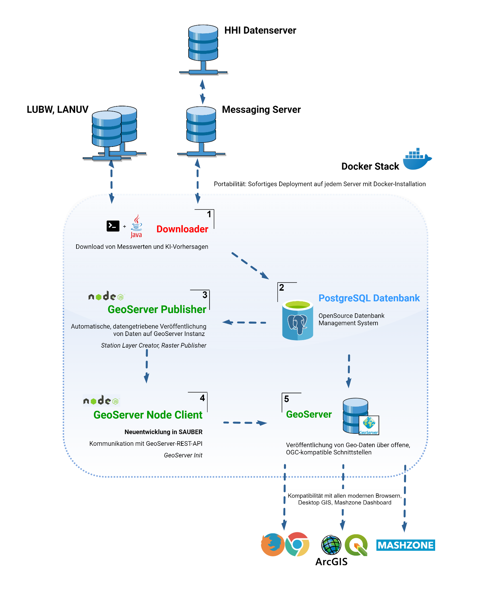
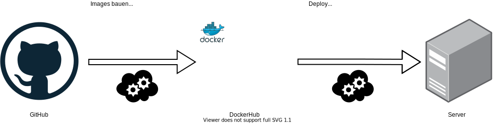
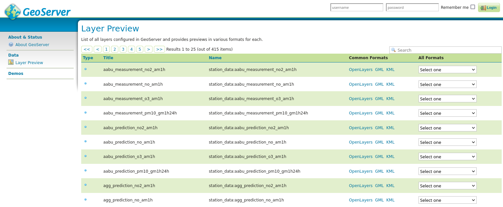
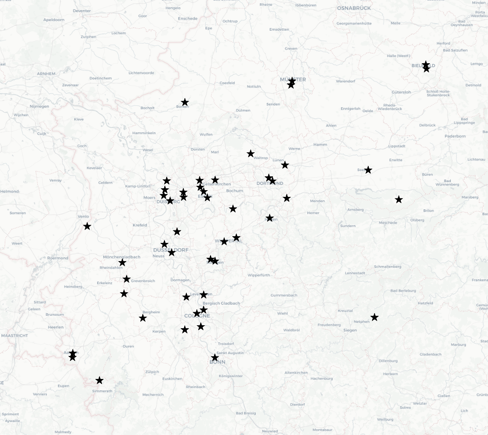
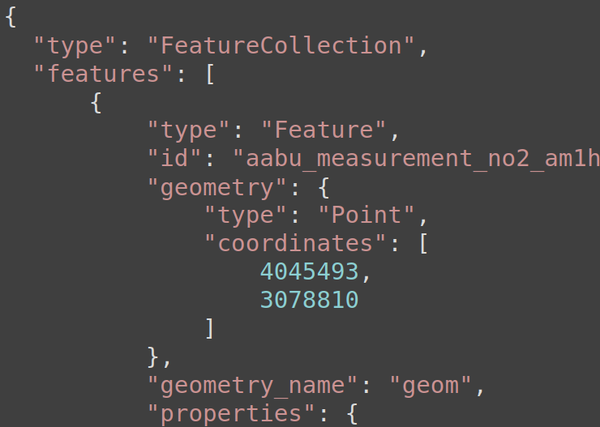
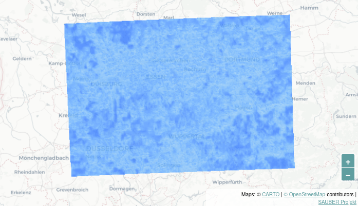
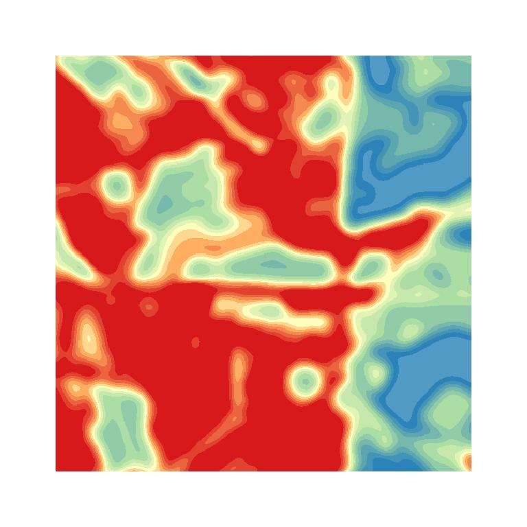

Umweltdaten mit Microservices verarbeiten und veröffentlichen
Jakob Miksch, Christian Mayer
meggsimum - Büro für Geoinformatik
GI_Salzburg, 07.07.2022
meggsimum
- meggsimum.de
- Dienstleistungen im Bereich GIS, Webmapping & GDI
- Maßgeschneiderte WebGIS-Lösungen
- Softwarekonzepte und Softwareentwicklung
- Geodaten
- Beratung und Schulung
Satellitenbasiertes System zur Anzeige, Prognose und Simulation von Luftschadstoffen für eine nachhaltige Stadt- und Regionalentwicklung
KI-basierte Informationsplattform für die Lokalisierung und Simulation von Hitzeinseln für eine innovative Stadt- und Verkehrsplanung
Architektur
(Abbildung rechts von geomer GmbH)

Datenbank
|
|
|
|
| PostgreSQL | PostGIS | TimescaleDB |
Middleware
|
|
|
|
| GeoServer | Node.js | Java |
Frontend
|
|
|
|
| JavaScript | OpenLayers | Vue.js |
Containerisierung
CI - Continuous Integration
GeoServer
~470 verfügbare Layer
 sauber-sdi.meggsimum.de/geoserverStationsdaten
als WFS - in vielen Formaten
|  |  |
| Kartendarstellung | Rohdaten |
Prognosen
Simulation
|  | |
| Ist-Zustand | Modifikation |
Impressum
Autor
Jakob Miksch, Christian Mayer
meggsimum - Büro für Geoinformatik (Christian Mayer)
Schillerstraße 2a
67122 Mutterstadt
info@meggsimum.de
meggsimum - Büro für Geoinformatik (Christian Mayer)
Schillerstraße 2a
67122 Mutterstadt
info@meggsimum.de
Lizenz
Diese Folien sind unter CC BY-SA veröffentlicht.